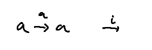

{-# OPTIONS --cubical --safe #-}
open import Cubical.Core.Everything
-- cubical type theory (CTT) の話
-- (based) identity type
data Id {ℓ} {A : Set ℓ} (a : A) : A → Set ℓ where
reflId : Id a a
-- CTT においては、inductive family として定まる Id の他に path type というものがある
-- Id と path type は型として同値になるが、CTT において Id はあまり使わない
-- CTT では interval I が primitive に備わっている（厳密に言うと I は型ではない）
-- a b : A に対して、path p : a ≡ b は、
-- 端点 i0 i1 : I をそれぞれ a b : A に写すような関数 p : I → A
-- のようにふるまう
-- refl は constant path として定義される
refl : ∀ {ℓ} {A : Set ℓ} {a : A} → a ≡ a
refl {a = a} i = a

-- inverse
inv : ∀ {ℓ} {A : Set ℓ} {a b : A} → a ≡ b → b ≡ a
inv p i = p (~ i)
-- path type は inductive に定まっているわけではないので、inv をパターンマッチで作ることはできない
-- De Morgan CTT においては ~ : I → I という演算が備わっている
-- ~ i0 は i1 に簡約され、~ i1 は i0 に簡約される
-- p (~ i0) = p i1 = b や p (~ i1) = p i0 = a のように簡約されるので、λ i. p (~ i) は型 b ≡ a をもつ
-- inv の定義は複数考えられるが、恐らくこ上の定義が最も単純
-- 例えば primitive に備わっている transp を使うと次のような定義もできる（MLTT における定義に近い）
inv₁ : ∀ {ℓ} {A : Set ℓ} {a b : A} → a ≡ b → b ≡ a
inv₁ {a = a} p = transp (λ i → p i ≡ a) i0 refl
-- p i ≡ a は
-- i = i0 のとき a ≡ a
-- i = i1 のとき b ≡ a
-- に簡約されるので、p で refl : a ≡ a を transp して b ≡ a の項を作っている
-- ~ (~ i) は i に簡約される
-- その結果、inv (inv p) は p に簡約される
inv-inv : ∀ {ℓ} {A : Set ℓ} {a b : A} (p : a ≡ b) → (inv (inv p)) ≡ p
inv-inv p = refl
-- circle (higher inductive type)
data S¹ : Set where
base : S¹
loop : base ≡ base
-- canonicity より S¹ の閉項（ただし interval I の term を自由変数として持つものは含む）は
-- base
-- loop _
-- transp _ _ _ （transp は primitive に備わっているもの）
-- hcomp _ _ （hcomp は primitive に備わっているもの。以下で少し触れる）
-- のいずれかの形になるよう簡約できる（はず。流儀によっては transp, hcomp の代わりに comp を使っているかも）
-- 特に I の term を自由変数として持たない S¹ の閉項は base に簡約できるはず
-- 実は、S¹ から他の型への関数を作るときは base と loop _ の行き先を決めれば十分
-- 他の場合は agda 側が勝手に埋めてくれるはず
-- base ≡ base の閉項は λ i → (S¹ の閉項) という形に簡約できるはず（これも canonicity の一部）
-- 閉項の簡約例
-- refl {a = base}
-- = λ i → base
-- inv (refl {a = base})
-- = λ i → base
-- inv loop
-- = λ i → loop (~ i)
-- inv (inv loop)
-- = λ i → loop i
-- inv₁ loop = λ i → loop (~ i)
-- = transp (λ i → loop i ≡ base) i0 (λ i → base)
-- inv₁ (inv₁ loop)
-- = transp
-- (λ i →
-- hcomp (λ i₁ .o → primPOr (~ i) i (λ _ → loop i₁) (λ _ → base) _)
-- base ≡ base)
-- i0 (λ i → base)
-- inv₁ (inv₁ loop) i0
-- = base
-- path の正規形は多少複雑だが、それでも canonical form になっているので i0, i1 を代入すると base に簡約できる
-- composition (Kan filling operation)
-- ここでは homogeneous なものだけ使う
-- 不完全な箱から、箱の蓋となるような path を作る規則 hcomp がある
-- それを利用して composition を定義する
_⋅⋅_⋅⋅_ : ∀ {ℓ} {A : Set ℓ} {a b c d : A} → a ≡ b → b ≡ c → c ≡ d → a ≡ d
(p ⋅⋅ q ⋅⋅ r) i =
hcomp (λ j → λ { (i = i0) → p (~ j)
; (i = i1) → r j}) (q i)
_⋅_ : ∀ {ℓ} {A : Set ℓ} {a b c : A} → a ≡ b → b ≡ c → a ≡ c
p ⋅ q = refl ⋅⋅ p ⋅⋅ q
-- 簡約例
-- loop ⋅ refl
-- = λ i → hcomp (λ { j (i = i0) → base ; j (i = i1) → base }) (loop i)
-- (loop ⋅ refl) i0
-- = base
-- loop ⋅ inv loop
-- = λ i → hcomp (λ { j (i = i0) → base ; j (i = i1) → loop (~ j) }) (loop i)
-- (loop ⋅ inv loop) i0
-- = base
-- path の正規形は多少複雑だが、それでも canonical form になっているので i0, i1 を代入すると base に簡約できる
-- groupoid 的な等式の証明
-- hcomp で箱の蓋を作ったが、再度 hcomp を使って箱の中身を埋める（filler の構成）
-- filler を利用して groupoid 的な等式を証明する
-- filler を定義するための準備
-- 不完全な箱に対して、filler を作る関数 hfill が library で定義されている
-- hfill : {ℓ : Level} {A : Type ℓ} {φ : I} (u : I → .(IsOne φ) → A) →
-- A [ φ ↦ u i0 ] → I → A
-- hfill = λ {φ} u u0 i →
-- hcomp (λ { j (φ = i1) → u (i ∧ j) _ ; j (i = i0) → outS u0 }) (outS u0)
-- filler の構成
Square : ∀ {ℓ} {A : Set ℓ} {a00 a01 a10 a11 : A}
→ (p : a00 ≡ a01) → (q : a00 ≡ a10) → (s : a01 ≡ a11) → (r : a10 ≡ a11)
→ Set ℓ
Square p q s r = PathP (λ i → p i ≡ r i) q s
-- PathP _ _ は heterogeneous equality
⋅⋅-filler : ∀ {ℓ} {A : Set ℓ} {a b c d : A}
→ (p : a ≡ b) (q : b ≡ c) (r : c ≡ d)
→ Square (inv p) q (p ⋅⋅ q ⋅⋅ r) r
⋅⋅-filler p q r i j =
hfill (λ k → λ {(j = i0) → p (~ k) ; (j = i1) → r k})
(inS (q j)) i
⋅-filler : ∀ {ℓ} {A : Set ℓ} {a b c : A}
→ (p : a ≡ b) (q : b ≡ c)
→ Square refl p (p ⋅ q) q
⋅-filler p q = ⋅⋅-filler refl p q
⋅-filler' : ∀ {ℓ} {A : Set ℓ} {a b c : A}
→ (p : a ≡ b) (q : b ≡ c)
→ Square (inv p) q (p ⋅ q) refl
⋅-filler' {a = a} {b} {c} p q j i =
hcomp (λ k → λ { (i = i0) → p (~ j)
; (i = i1) → q k
; (j = i0) → q (i ∧ k)})
(p (i ∨ ~ j))
-- filler を使って groupoid っぽくなっていることを確かめる
refl-lunit : ∀ {ℓ} {A : Set ℓ} {a b : A} → (p : a ≡ b) → (refl ⋅ p ≡ p)
refl-lunit p = inv (⋅-filler' refl p)
refl-runit : ∀ {ℓ} {A : Set ℓ} {a b : A} → (p : a ≡ b) → (p ⋅ refl ≡ p)
refl-runit p = inv (⋅-filler p refl)
comp-assoc : ∀ {ℓ} {A : Set ℓ} {a b c d : A}
→ (p : a ≡ b) (q : b ≡ c) (r : c ≡ d)
→ (p ⋅ (q ⋅ r)) ≡ ((p ⋅ q) ⋅ r)
comp-assoc p q r i = ⋅-filler p q i ⋅ ⋅-filler' q r (~ i)
inv-linv : ∀ {ℓ} {A : Set ℓ} {a b : A}
→ (p : a ≡ b)
→ ((inv p) ⋅ p) ≡ refl
inv-linv {b = b} p i j =
hcomp (λ k → λ { (j = i0) → b
; (j = i1) → p (k ∨ i)
; (i = i1) → b})
(p ((~ j) ∨ i))
inv-rinv : ∀ {ℓ} {A : Set ℓ} {a b : A}
→ (p : a ≡ b)
→ (p ⋅ (inv p)) ≡ refl
inv-rinv p = inv-linv (inv p)